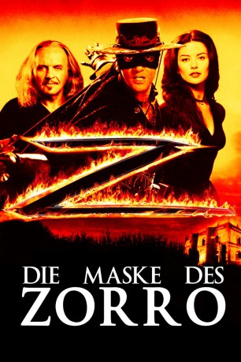
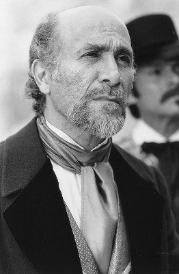
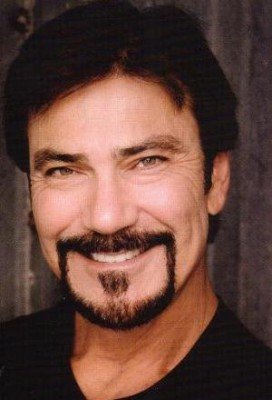

#1207 Die Maske des Zorro
Alternativ: The Mask of Zorro
Auszeichnungen: für 2 Oscars nominiert
 
 IMDB-Wertung: 6.7 / 10
IMDB-Wertung: 6.7 / 10  Metascore: 63
Metascore: 63 
Don Diego De La Vega ist Zorro. Sein Markenzeichen, das “Z” lässt die Mächtigen erzittern und die Unterdrückten hoffen. Nach 20 Jahren Gefangenschaft im Verlies von Gouverneur Don Rafael Montero gelingt Zorro endlich die Flucht. Beseelt von dem Gedanken an Rache für seine ermordete Frau und die entführte Tochter Elena will er Montero töten – und findet in dem ungeschliffenen Banditen Alejandro Murrieta einen idealen Nachfolger. Er trainiert den jungen Wilden, lehrt ihn den Umgang mit Degen und Peitsche. Dieser wird seine neue Waffe gegen Montero sein! Doch der Weg zur entscheidenden Schlacht ist steinig und Monteros Handlanger sind unerbittlich. Es ist ein gewaltiger Kampf für Freiheit und Gerechtigkeit, aber auch ein Kampf um Elena, den vier Männer gleichermaßen leidenschaftlich fechten.
Jahr: 1998
Dauer: 136 Minuten
FSK: 12
Land: USA Studio: TriStar PicturesTonspuren:
Untertitel: Deutsch,
Auflösung: 720p (1280x528) Größe: 6717 MB
Genre: Action, Thriller, Komödie, Abenteuer, Western, Liebe
Regisseur:  Martin Campbell
Martin Campbell
Drehbuch: Johnston McCulley, Ted Elliott, Terry Rossio, Randall Jahnson, John Eskow
Soundtrack: James Horner
Darsteller:
 Stuart Wilson als Don Rafael Montero
Stuart Wilson als Don Rafael Montero-  Tony Amendola als Don Luiz
 Anthony Hopkins als Don Diego de la Vega / Zorro
Anthony Hopkins als Don Diego de la Vega / Zorro- Julieta Rosen als Esperanza de la Vega
 Antonio Banderas als Alejandro Murrieta / Zorro
Antonio Banderas als Alejandro Murrieta / Zorro-  Victor Rivers als Joaquín Murrieta
 L.Q. Jones als Three-Fingered Jack
L.Q. Jones als Three-Fingered Jack Tony Genaro als Watering Station Owner
Tony Genaro als Watering Station Owner- David Villalpando als Stupid Soldier
 Matt Letscher als Capt. Harrison Love
Matt Letscher als Capt. Harrison Love Maury Chaykin als Prison Warden
Maury Chaykin als Prison Warden Paul Ganus als Prison Guard
Paul Ganus als Prison Guard Conrad Roberts als Black Zorro
Conrad Roberts als Black Zorro Pedro Armendáriz Jr. als Don Pedro
Pedro Armendáriz Jr. als Don Pedro Fernando Becerril als One of the Six Dons
Fernando Becerril als One of the Six Dons Catherine Zeta-Jones als Elena
Catherine Zeta-Jones als Elena- Vanessa Bauche als Indian Girl
- Kaylissa Keli Garcia als Baby Joaquín
- Eduardo Roman als Guard at Goldmine , uncredited
- Taso N. Stavrakis als Firing Squad Soldier #1 , uncredited
- José María de Tavira als Young Alejandro Murrieta
- Diego Sieres als Young Joaquín Murrieta
- Emiliano Guerra als Boy Crying
- Yolanda Orisaga als Woman Crying
- Paco Morayta als Undertaker
- William Marquez als Fray Felipe
- Pedro Altamirano als Squad Leader
- Luisa Huertas als Nanny
- María Fernández Cruz als Baby Elena de la Vega
- Mónica Fernández Cruz als Baby Elena de la Vega
- Raúl Martínez als Heavyset Lieutenant
- José Pérez als Cpl. Armando Garcia
- Tony Cabral als Soldier Holding 'Wanted' Poster
- Iván Rafael als Small Boy at Watering Station
- Sergio Espinoza als Leper Zorro
- Abel Woolrich als Ancient Zorro
- Moisés Suárez als Don Héctor
- Humberto Elizondo als Don Julio
- Alberto Carrera als One of the Six Dons
- Eduardo López als One of the Six Dons
- Gonzalo Lora als One of the Six Dons
- Rudy Miller als One of the Six Dons
- Manolo Pastor als One of the Six Dons
- Diego Sandoval als Padre at the Beach
- Enrike Palma als Bartender
- Erika Carlsson als Don Pedro's Wife
- Manuel de Jesús Vásquez Morales als Guitar-Playing Soldier
- Óscar Zerafín González als Giant Soldier
- Kelsie Kimberli Garcia als Baby Joaquín
- JD Roberto als Firing Squad Drummer , uncredited
Datei: X:\4-Tetralogie(M-Z)\Zorro\Maske des Zorro, Die (1998, FSK12, 1280x528).mkv seit 04.06.2015
Festplatte: HD Collection-3(N-Z)-6(A-Z)
 Es gibt insgesamt 7 Filme in der Gruppe '4-Tetralogie(M-Z)\Zorro'
Es gibt insgesamt 7 Filme in der Gruppe '4-Tetralogie(M-Z)\Zorro'